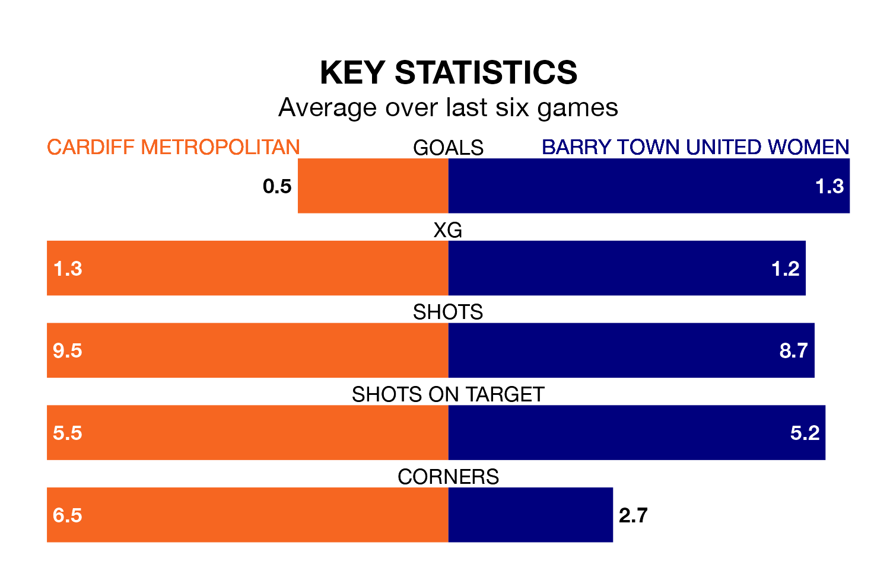

Struggling Barry Town United Women face Cardiff Metropolitan away on Sunday looking to build on a win in their last league outing.
After securing all three points with a 4-1 victory over The New Saints Women on January 21, Barry Town United sit seventh in Welsh Premier Women's League.
They travel to play a Cardiff Metropolitan side sixth in the standings, who lost in their last match, 3-0 against Swansea City, on January 14.
With 13 goals in 11 games so far this season, Barry Town United are the league's joint-third-lowest scorers with 1.2 goals per game. And they are conceding more than average, letting in 32 goals at a rate of 2.9 per game.
Cardiff Metropolitan are also below average scorers, with 1.3 goals per game, compared to a league average of 1.8. They have conceded 2.4 goals per game.
The hosts are in disappointing form in Welsh Premier Women's League, with two wins and four losses from their last six games.
And also with two wins and four losses over that period, the away side's form is identical – they have both taken six points from 18.
In the last five years, Cardiff Metropolitan and Barry Town United have played each other on five occasions. Cardiff Metropolitan won four of them and Barry Town United one.
On average, Cardiff Metropolitan scored 4.8 goals and Barry Town United 1.4 in those matches.
Their last meeting was on October 22, when Barry Town United won 4-2 at home.
Updated: 09:18 (UTC), 23/01/24